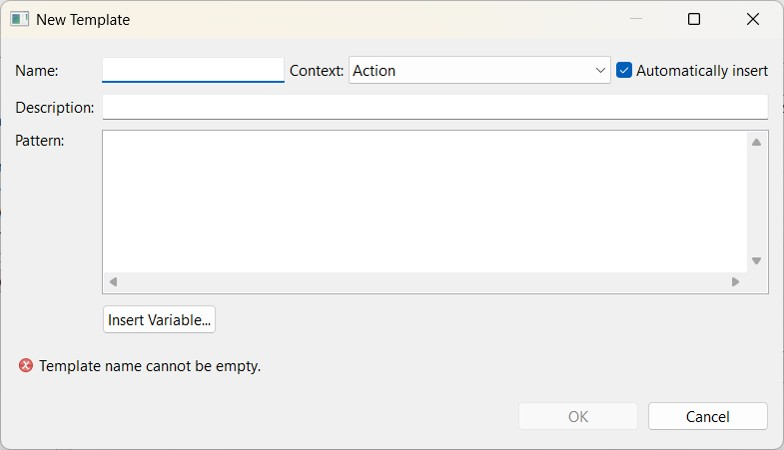

The templates
Templates are ready-to-use input models. In a single operation, they insert a complete structure such as a
player profile or a standard game action—in which only the variable fields need to be filled in. They also feature auto-completion.
Templates are not set in stone: each user can define and adapt them to suit their own way of working, via the
editor’s preferences. Users can create new templates, modify existing ones, delete them, or import and export them to share with
other users.
Here is how to create a new template:
-
Open the tool preferences, then go to the Templates page for the relevant editor (match or team).

-
Click on New… to open the creation window.

Enter the template name. This is the name that will be typed and subsequently suggested by the
auto-completion feature.
Provide a description, which will be displayed in the list of options to help with selecting the
right template.
Choose the context, which determines where the template can be used.
Enter the template (the text to be inserted). Variable parts to be filled in by the user are written
in the format ${name}, and the cursor position can be specified using ${cursor}.
Confirm with OK, then Apply
The template is then immediately available: simply type its name and trigger auto-completion (Ctrl+Space).
The operation of the templates page is the same throughout Eclipse. For a detailed description of the buttons and options,
consult the Eclipse help.